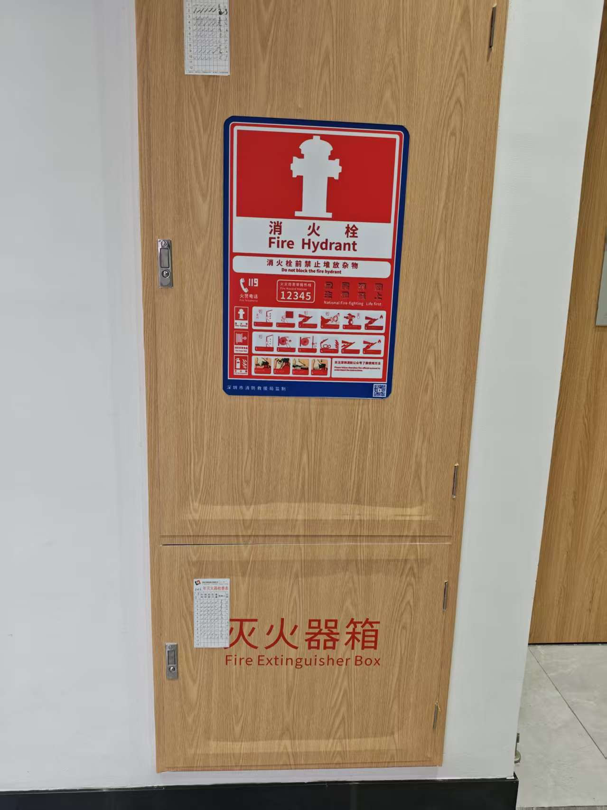
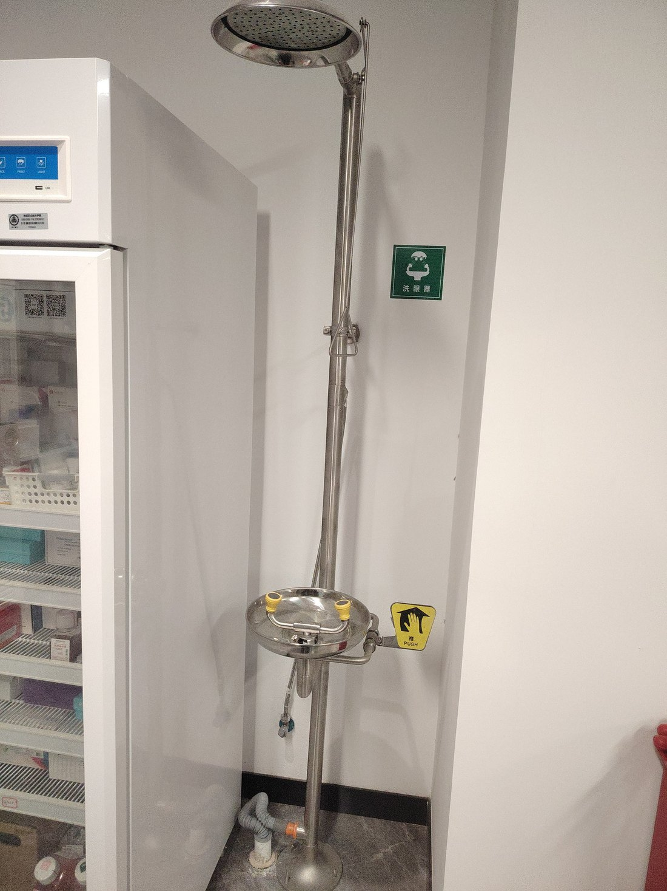
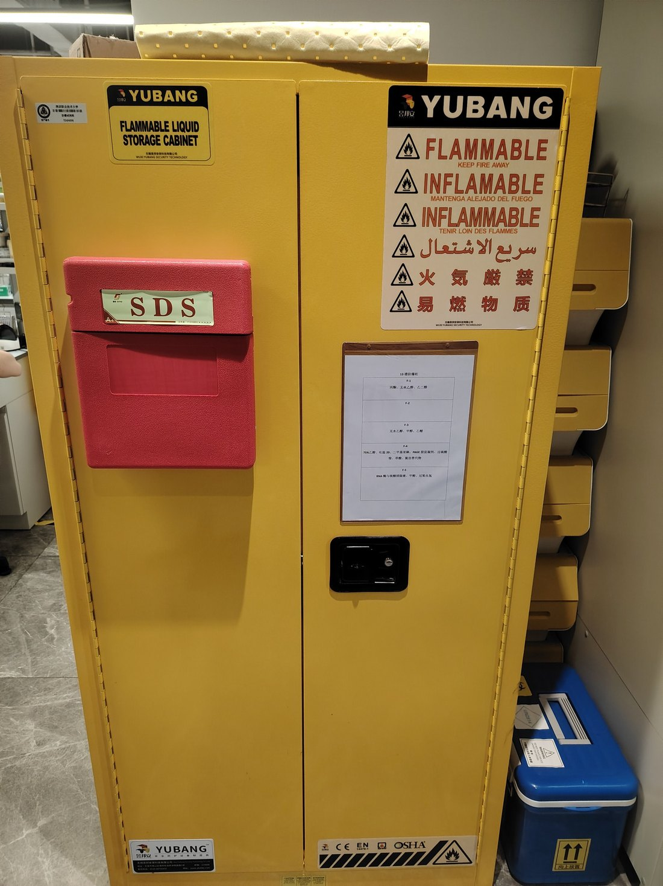
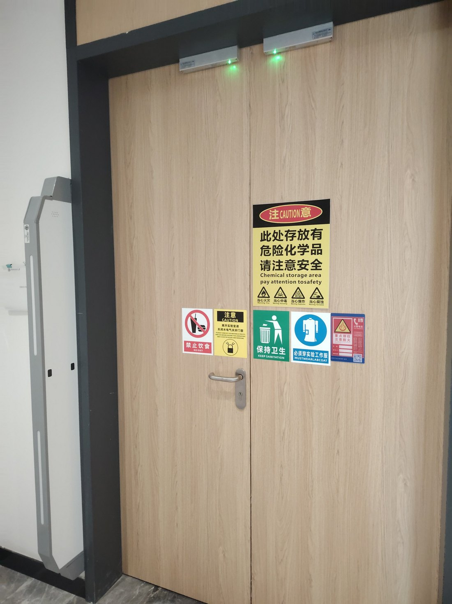
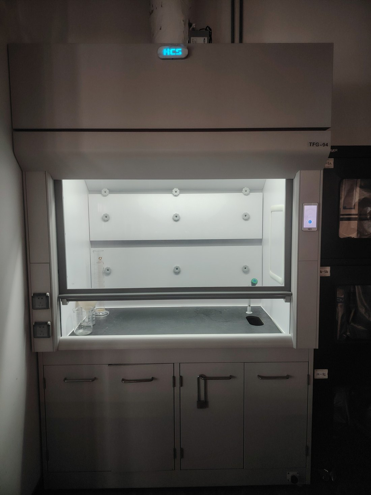
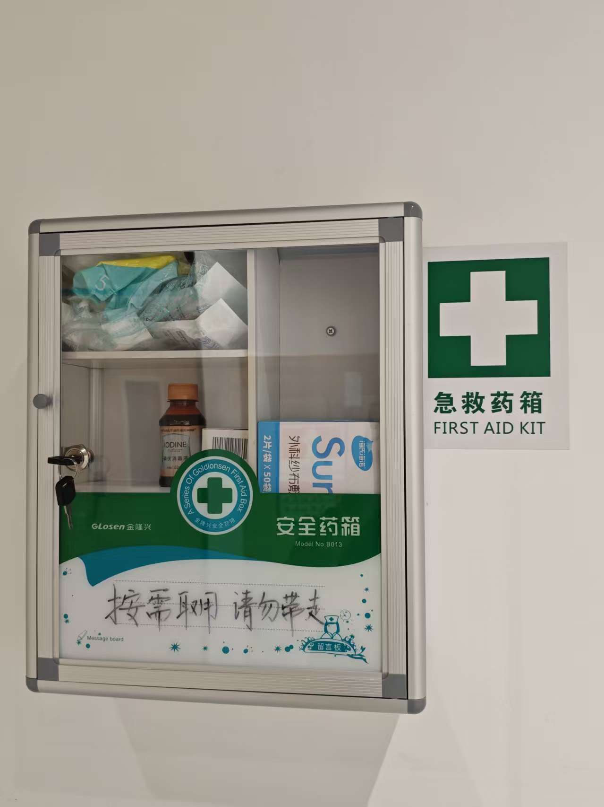

Safety
Overview
The laboratory is the core setting for scientific discovery and engineering innovation. Many advances that have transformed human health, the environment and society were born in laboratories, yet the laboratory is also a space that demands unusually strict standards of discipline and responsibility. We therefore hold that safety is not an add-on requirement outside the experiment: it is part of experimental design, execution and record-keeping. Every member who enters the laboratory must be responsible to themselves, to their teammates, to the laboratory and to the environment, and must treat every activity in the laboratory seriously.
LS Risk Matrix
This table uses an LS (Likelihood × Severity) risk matrix to carry out an item-by-item safety assessment of the project's experimental workflow [1][2]. L denotes likelihood: the probability that the risk event occurs under the existing training, facilities, SOPs and protective conditions. S denotes severity: the consequence for human health, experimental progress and the environment once it occurs. L and S are each graded from 1 to 5, and the risk value is L × S: 1–4 low risk, 5–9 general risk, 10–16 moderately high risk, 17–25 high risk. The table also lists the initial risk, the existing control measures and the residual risk; the L and S of every item carry an independent scoring rationale rather than a blanket score, so each score corresponds one-to-one with a specific operation, material and set of control conditions.
When reading the table, the risk value is the initial risk before control measures are applied, and the residual risk is what remains after training, SOPs, PPE, clean benches, fume hoods, SDS consultation and waste inactivation have been applied. We assessed 16 experimental steps, covering HA handling, BY4741 yeast culture and passaging, transformation, CRISPR-Cas9 knockout of FAR1/SST2, GPA1–Gαq homologous recombination, PAGER receptor expression, DCZ1/DCZ small-molecule agonist handling, X-α-Gal and MEL1 colorimetric detection, yEGFP fluorescence detection, centrifugation and glassware handling, autoclave and UV equipment, the use of flammable solvents and heating equipment, the air-sampling interface, waste collection and inactivation, routine laboratory management, and the environmental release risk of the engineered yeast. Most steps carry an initial risk value of 1–2 and fall in the low-risk band. The highest risk value is the use of flammable solvents and heating equipment, with L=2 and S=3 giving a risk value of 6, which falls in the general-risk band: ethanol and similar solvents, once spilled and then exposed to a flame, an electric spark or a hot surface, may cause local burns and damage to the bench and equipment. With solvents drawn in limited quantities and kept in a dedicated cabinet, heating equipment attended while in use and switched off before leaving, and a fire extinguisher and hydrant within reach, the residual risk drops to low. The next highest is DCZ1/DCZ small-molecule agonist handling, with L=2 and S=2 giving a risk value of 4, still within the low-risk band; the reason is that handling small-molecule chemicals may occasionally involve skin contact or inhalation, but after consulting the SDS, wearing gloves and goggles, working in a fume hood or clean bench and segregating waste liquids, the residual risk drops to low.
How the matrix is graded
| L value | Name | Explanation |
|---|---|---|
| 1 | Rare | Almost never occurs; under normal conditions the probability is extremely low |
| 2 | Uncommon | May occur occasionally, but the probability is low |
| 3 | Possible | May occur under certain conditions, with a certain probability |
| 4 | Likely | Relatively easy to occur; requires attention and control measures |
| 5 | Very likely | High probability; very likely to occur without effective controls |
| S value | Level | Explanation |
|---|---|---|
| 1 | Minor | Essentially no injury, or only a slight impact that is usually easy to recover from |
| 2 | Slight | Possible minor injury, equipment damage or impact of limited scope |
| 3 | Moderate | Possible noticeable injury, considerable equipment loss or some environmental impact |
| 4 | Severe | Possible serious injury, major property loss or a fairly pronounced environmental impact |
| 5 | Very severe | Possible major casualties, serious environmental pollution or major social impact |
Calculation:
LS = L × S
| LS value | Risk level | Risk description | Recommended measures |
|---|---|---|---|
| 1–4 | Low | Low risk; acceptable under the existing control measures | Maintain existing measures and routine management |
| 5–9 | General | Some risk; requires attention | Improve protective measures and strengthen routine inspection |
| 10–16 | Moderately high | Noticeable risk requiring priority control | Develop and implement targeted control measures |
| 17–25 | High | High risk; should not proceed without effective control | Prioritise risk-reduction measures; suspend the activity if necessary |
Item-by-item assessment
The 16 steps below are scored one by one. L and S are given as the grade followed by its rationale, so that every score can be traced back to the operation, the material and the control conditions it refers to. On a narrow screen the table scrolls sideways.
| No. | Experimental step | Hazard category | Risk scenario | L | S | Risk value | Level | Control measures | Residual risk |
|---|---|---|---|---|---|---|---|---|---|
| 1 | HA hemagglutinin antigen handling | Biological | Mistaken for live-virus work, or generation of an infectious aerosol | 1Rare: purchased HA hemagglutinin is used, non-infectious, no live virus handled | 1Minor: non-infectious; cannot cause human infection or illness | 1 | Low | Use purchased HA hemagglutinin and confirm it is non-infectious with no viral physiological activity; no live virus handled; follow protein-reagent practice | Low |
| 2 | BY4741 yeast culture and passaging | Biological | Spill of engineered yeast culture or accidental ingestion | 1Rare: BSL-1 non-pathogenic chassis, operated in a biosafety cabinet | 1Minor: non-pathogenic yeast, no infection risk | 1 | Low | BSL-1 non-pathogenic chassis; auxotrophic containment; work in biosafety cabinet/clean bench; PPE; autoclave waste | Low |
| 3 | Yeast transformation and plasmid introduction | Biological/physical | Aerosol generated by pipetting or centrifugation | 1Rare: slow operation; centrifuge balanced with safety cups | 2Slight: possible transient respiratory discomfort, controllable | 2 | Low | Slow operation inside the biosafety cabinet; balance the centrifuge and use safety cups; PPE; bench disinfection; waste inactivation | Low |
| 4 | CRISPR-Cas9 knockout of FAR1/SST2 | Biological/chemical | Handling of pML104, sgRNA and selection reagents | 1Rare: per SOP, avoiding aerosols; no live virus involved | 2Slight: chemical reagents may cause local irritation, controllable | 2 | Low | Follow SOP; avoid aerosols; wear gloves and goggles; segregate and inactivate waste | Low |
| 5 | GPA1-Gαq homologous recombination | Biological | Leakage of engineered yeast or donor DNA | 1Rare: handled in the biosafety cabinet; donor DNA is non-pathogenic | 1Minor: non-pathogenic yeast and DNA, no infection risk | 1 | Low | Work in the biosafety cabinet; autoclave waste; never pour away at will; keep records | Low |
| 6 | PAGER receptor expression | Biological | Leakage of yeast expressing a heterologous protein | 1Rare: non-pathogenic chassis, auxotrophic containment | 1Minor: non-pathogenic yeast, no infection risk | 1 | Low | Non-pathogenic yeast chassis; auxotrophic containment; waste inactivation | Low |
| 7 | DCZ1/DCZ agonist handling | Chemical | Skin contact, inhalation or ingestion | 2Uncommon: occasional skin contact or inhalation possible; fume hood and PPE reduce it | 2Slight: possible local irritation requiring simple treatment, controllable | 4 | Low | Consult the SDS; wear gloves, goggles and lab coat; work in a fume hood or biosafety cabinet; segregate waste liquids | Low |
| 8 | X-α-Gal chromogenic substrate and MEL1 detection | Chemical | Reagent contact or mixing of waste liquids | 1Rare: small amounts used, gloves worn, waste collected separately | 2Slight: possible local irritation, controllable | 2 | Low | Consult the SDS; wear gloves; collect waste separately; dispose of as chemical waste | Low |
| 9 | yEGFP fluorescence detection | Physical | Exposure to UV or the fluorescence instrument | 1Rare: instruments have covers and are used after training | 2Slight: possible skin or eye discomfort, preventable | 2 | Low | Use instruments after training; use instrument covers; wear goggles when necessary | Low |
| 10 | Centrifugation, pipetting and glassware handling | Physical | Broken glass, sharps injury, centrifuge accident | 1Rare: standard practice; centrifuge balanced; sharps container used | 2Slight: cuts require medical attention, controllable | 2 | Low | Sharps container; balance the centrifuge; careful handling; first-aid kit available | Low |
| 11 | Autoclave and UV equipment | Physical | Burns, UV exposure, pressure risk | 1Rare: operated after training; interlocks and warning labels | 2Slight: burns require medical attention, controllable | 2 | Low | Operate after training; warning labels; interlocks; heat-resistant gloves; enter only after the UV is switched off | Low |
| 12 | Use of flammable solvents and heating equipment | Chemical/physical | Flammable solvents such as ethanol spill and are ignited by a flame, an electric spark or a hot surface | 2Uncommon: solvents are drawn in limited quantities and kept in a dedicated cabinet; no open flame at the bench | 3Moderate: may cause local burns and damage to the bench and equipment; can be dealt with using a fire extinguisher | 6 | General | Solvents drawn as needed and returned to the cabinet after use; heating equipment attended while in use and switched off before leaving; extinguisher and hydrant within reach, access kept clear | Low |
| 13 | Air-sampling interface and liquid sample application | Biological/physical | Leakage or aerosol from simulated samples | 1Rare: no live virus collected; handled in the biosafety cabinet | 2Slight: local contamination, controllable, no infection risk | 2 | Low | No live virus collected; only purchased HA or simulated samples; work in the biosafety cabinet; waste inactivation | Low |
| 14 | Waste collection and inactivation | Environmental/biological | Escape of engineered yeast or chemical waste-liquid contamination | 1Rare: segregated by category, autoclaved, waste liquids consigned for treatment | 2Slight: local environmental contamination, controllable, no serious ecological impact | 2 | Low | Autoclave biological waste; segregate and consign chemical waste liquids; do not discharge to drains | Low |
| 15 | Routine laboratory management and records | Human factors | Inadequate training, operating error, missing records | 1Rare: safety training, supervisor briefing, mutual checking within the team | 2Slight: errors are usually controllable with no serious health consequences | 2 | Low | Safety training; additional supervisor briefing; records and reporting; mutual checking; never carry out high-risk operations alone | Low |
| 16 | Environmental release of the engineered yeast | Environmental | Yeast escaping into the natural environment | 1Rare: quadruple auxotroph, difficult to survive in the natural environment | 1Minor: difficult to survive; no ecological harm | 1 | Low | BY4741 is auxotrophic for histidine, leucine, methionine and uracil; in the natural environment it is normally difficult to obtain all four nutrients at sufficient levels; it survives only in dedicated medium; waste is inactivated | Low |
Laboratory Safety Environment
The laboratory we work in has strict and well-developed safety management. Entry is controlled by access authorization, the areas are clearly divided, and operations of different risk levels are carried out in their corresponding areas. Warning signs for biological hazards, chemical hazards, flammability, corrosion, autoclaving, ultraviolet light, eyewash, first aid, fire extinguishers, emergency exits and waste segregation are posted throughout the laboratory, and SOPs, emergency contacts and safety reminders are posted at key locations [2]. A Safety Emergency Response Plan for Teaching Laboratories (Trial) is also posted in a prominent position, compiled in accordance with the Work Safety Law, the Fire Protection Law and the Emergency Response Law of the People's Republic of China and the Regulations on the Safety Management of Hazardous Chemicals; it sets out the emergency organizational structure, the escalation and reporting procedure and 24-hour emergency contact numbers. Fire-fighting facilities are provided close at hand: the hydrant cabinets and extinguisher boxes around the laboratory are grouped together, their doors carry signage and inspection records, and the access to them is kept clear (Figure 1). After entering the laboratory we can quickly identify the sources of risk, the boundaries of operation and the location of both emergency equipment and fire-fighting equipment (Figure 4).
The laboratory is equipped with clean benches, fume hoods, an autoclave, an eyewash station, an emergency shower, first-aid kits, fire extinguishers, spill kits, absorbent materials, sharps containers, biohazard waste bags and chemical waste containers. Flammable liquids and other hazardous chemicals are kept in a dedicated storage cabinet with the corresponding SDS documentation on hand, and hazardous waste is placed in segregated collection containers and never poured away at will (Figure 3). The eyewash station and emergency shower (Figure 2) are always available. For microbiological work we operate inside a clean bench; for volatile or irritant chemicals we work in a fume hood (Figure 5). Our supervising teachers give safety reminders tailored to each specific experiment, and team members also remind and check one another. After experiments we handle biological waste and chemical waste by category and autoclave materials that need inactivation. Overall, the laboratory's level of safety, its warning system and its emergency provision give us a reliable basis for carrying out this project. On fire safety, the hydrant cabinets and extinguisher boxes are close at hand and the access to them is kept clear; flammable solvents are drawn only as needed and returned to the cabinet after use, and heating equipment is attended while in use and switched off before we leave.






Personal Safety
All our members have received laboratory safety training and met the laboratory access requirements [1][2]. We are familiar with the laboratory safety rules, emergency procedures and personal protective requirements. Before any laboratory activity in this project began, our supervising teachers gave us an additional targeted safety briefing, focusing on the biological materials involved, the risks of the reagents, the boundaries of operation and the record-keeping requirements. During the experiments our activities were recorded and reported, and we had studied the reagents we used in advance to confirm their risks.
For personal protection we select and correctly wear lab coats, gloves, goggles and masks according to the risk of the specific operation, keep proper working practice inside a clean bench or fume hood, wash our hands properly before and after experiments, and take off our lab coats before leaving the laboratory. We all know where the eyewash station, first-aid kit (Figure 6), fire extinguisher, spill kit and emergency shower are, and in the event of a spill, contact or suspected exposure we know how to respond immediately and report it. During experiments we supervise one another's protective equipment and working state, keep records complete, and never carry out high-risk operations alone. Overall, personal safety is not a paper rule for us but a practical habit and a team consensus in daily experiments.
Project Safety
The target detected in this project is the hemagglutinin (HA) protein on the surface of influenza A virus. The HA used in our experiments is purchased; it is not infectious and does not possess the biological activity of influenza A virus. An influenza vaccine based on recombinant HA protein contains only hemagglutinin as a single antigenic protein and no viral genome, so it cannot self-replicate and is itself non-infectious [3]. The HA used in this experiment therefore does not produce the infectious characteristics of influenza A virus, cannot infect people and cannot make people ill. We do not handle live virus, we introduce no replication-competent viral sequences, and we introduce no virulence-related genes.
For the recognition element we use an anti-HA nanobody (VHH) as the recognition domain [4], and the human hM1Dq receptor as the signalling core [5]. The PAGER (Programmable Antigen-gated G-protein-coupled Engineered Receptors) receptor uses an "antigen-gated de-repression" logic [6]: in the absence of HA, the MT1 auto-inhibitory peptide occupies the orthosteric site of hM1Dq and holds the receptor at a low background; once HA binds the nanobody, steric hindrance relieves the MT1 inhibition, and the DCZ small molecule then activates hM1Dq [7], triggering the downstream yeast MAPK pathway and FUS1 reporter gene output. This self-inhibitory design reduces background leakage and false-positive risk [6].
For the chassis we use the non-pathogenic, laboratory-standard Saccharomyces cerevisiae BY4741. S. cerevisiae is classed at the lowest risk level in national biosafety listings, and this project is carried out entirely under biosafety level 1 (BSL-1) conditions [1]. BY4741 is an internationally used laboratory chassis with a well-defined genetic background; it is naturally auxotrophic for histidine (His), leucine (Leu), methionine (Met) and uracil (Ura), cannot synthesise these four essential nutrients and must obtain them from outside [8]. The vector system, the reporter system and the plasmids used for GPA1 humanisation/knockout constructed in this study carry LEU, HIS and URA selection markers respectively, complementing the corresponding auxotrophies.
To ensure biosafety we also designed a marker-removal strategy: the URA marker is removed by 5-fluoroorotic acid (5-FOA) counter-selection [9], returning the engineered strain to a uracil-auxotrophic state after modification, which together with the chassis's original histidine, leucine and methionine auxotrophies makes it a quadruple auxotroph. This multiple-auxotrophy mechanism makes it difficult for the strain to proliferate effectively in environments lacking the corresponding nutrient supplements; conditions that supply all four free nutrients simultaneously and at sufficient concentration do not normally exist in the natural environment, so our engineered yeast survives and proliferates mainly in specially formulated media.

To verify this native auxotrophy experimentally, wild-type Saccharomyces cerevisiae BY4741 was streaked on a complete YPD plate and four different single-dropout SD plates (lacking histidine, leucine, uracil, or methionine, respectively). Growth was observed after incubation. The absence of colonies on the dropout plates confirms the strain's natural auxotrophy, which is the genetic basis on which the marker-removal and quadruple-auxotrophy containment strategy described above is built.

We further confirmed the stringency of the histidine selection used in our chassis work. Following the transformation of the reporter plasmid into S. cerevisiae BY4741 competent cells, the transformation mixture was plated on SD-His selective medium to screen for positive transformants. As shown in Figure 8, robust colony growth was observed on the three experimental plates (Figure 8A–C), indicating a successful transformation process. In contrast, the negative-control plate (Figure 8D), which lacked the plasmid DNA, showed no colony growth. This absence of colonies on the negative control confirms that the SD-His selection pressure is stringent and there was no contamination or untransformed background growth.
This design — genetically modifying an already auxotrophic strain and layering a marker-removal step on top — makes it difficult for the strain to proliferate effectively outside the specific supplemented medium, thereby reducing the risk of environmental release. It should be noted that auxotrophy is usually regarded as the first layer of biological containment, and its protective strength depends on the availability of the essential nutrients in the surrounding environment [10]; work elsewhere has pushed yeast escape frequencies below 10⁻⁹ by introducing stronger barriers such as dependence on an unnatural amino acid. We therefore do not rest the whole safety case on auxotrophy itself, but also adopt enclosed operation, autoclave inactivation of waste and standardized management, forming multiple layers of protection.
For chassis modification we use the CRISPR-Cas9 system [11] to knock out FAR1 [12] and SST2 [13], removing interference from the yeast's own mating pathway with the cell cycle and signal strength; we also designed a Gpa1-Gαq chimeric G protein, replacing the five C-terminal amino acids KIGII of yeast Gpa1 with EYNLV from human Gαq [14], so that hM1Dq can couple to the yeast MAPK pathway. The reporter module uses the pheromone-responsive FUS1 promoter [15] to drive yEGFP [16] or MEL1 [17] expression, producing green fluorescence or a blue colour respectively. These modifications target only signal transduction and reporter output; they introduce no pathogenic factors and do not enhance the yeast's pathogenicity or environmental fitness.
All cultures, consumables and waste containing the engineered yeast are collected according to the laboratory's biological waste rules and autoclaved or otherwise effectively inactivated before disposal. Waste liquids containing chemical reagents are collected separately and handed to a qualified institution. The whole system is modular: replacing only the nanobody domain would allow it to be extended to the detection of other respiratory pathogens [6], and the safety assessment will be updated in step with any change of target.
References
- World Health Organization. Laboratory biosafety manual. 4th ed. Geneva: World Health Organization, 2020. ISBN 978-92-4-001131-1.
- General Administration of Quality Supervision, Inspection and Quarantine of the PRC; Standardization Administration of the PRC. Laboratories — General requirements for biosafety: GB 19489—2008. Beijing: Standards Press of China, 2008. (In Chinese)
- Clark TW, Tregoning JS, Lister H, et al. Recent advances in the influenza virus vaccine landscape: a comprehensive overview of technologies and trials. Clinical Microbiology Reviews, 2024, 37(4): e0002524. doi: 10.1128/cmr.00025-24.
- Gaiotto T, Hufton SE. Cross-neutralising nanobodies bind to a conserved pocket in the hemagglutinin stem region identified using yeast display and deep mutational scanning. PLoS One, 2016, 11(10): e0164296. doi: 10.1371/journal.pone.0164296.
- Armbruster BN, Li X, Pausch MH, et al. Evolving the lock to fit the key to create a family of G protein-coupled receptors potently activated by an inert ligand. Proceedings of the National Academy of Sciences, 2007, 104(12): 5163-5168. doi: 10.1073/pnas.0700293104.
- Kalogriopoulos NA, Tei R, Yan Y, et al. Synthetic GPCRs for programmable sensing and control of cell behaviour. Nature, 2025, 637(8044): 230-239. doi: 10.1038/s41586-024-08282-3.
- Nagai Y, Kikuchi E, Lerchner W, et al. Deschloroclozapine, a potent and selective chemogenetic actuator enables rapid neuronal and behavioral modulations in mice and monkeys. Nature Neuroscience, 2020, 23(9): 1157-1167. doi: 10.1038/s41593-020-0661-3.
- Brachmann CB, Davies A, Cost GJ, et al. Designer deletion strains derived from Saccharomyces cerevisiae S288C: a useful set of strains and plasmids for PCR-mediated gene disruption and other applications. Yeast, 1998, 14(2): 115-132. doi: 10.1002/(SICI)1097-0061(19980130)14:2<115::AID-YEA204>3.0.CO;2-2.
- Boeke JD, La Croute F, Fink GR. A positive selection for mutants lacking orotidine-5′-phosphate decarboxylase activity in yeast: 5-fluoro-orotic acid resistance. Molecular and General Genetics, 1984, 197(2): 345-346. doi: 10.1007/BF00330984.
- Chang T, Ding W, Yan S, et al. A robust yeast biocontainment system with two-layered regulation switch dependent on unnatural amino acid. Nature Communications, 2023, 14(1): 6487. doi: 10.1038/s41467-023-42358-4.
- Laughery MF, Hunter T, Brown A, et al. New vectors for simple and streamlined CRISPR-Cas9 genome editing in Saccharomyces cerevisiae. Yeast, 2015, 32(12): 711-720. doi: 10.1002/yea.3098.
- Pope PA, Bhaduri S, Pryciak PM. Regulation of cyclin-substrate docking by a G1 arrest signaling pathway and the Cdk inhibitor Far1. Current Biology, 2014, 24(12): 1390-1396. doi: 10.1016/j.cub.2014.05.002.
- Chasse SA, Flanary P, Parnell SC, et al. Genome-scale analysis reveals SST2 as the principal regulator of mating pheromone signaling in the yeast Saccharomyces cerevisiae. Eukaryotic Cell, 2006, 5(2): 330-346. doi: 10.1128/EC.5.2.330-346.2006.
- Brown AJ, Dyos SL, Whiteway MS, et al. Functional coupling of mammalian receptors to the yeast mating pathway using novel yeast/mammalian G protein α-subunit chimeras. Yeast, 2000, 16(1): 11-22. doi: 10.1002/(SICI)1097-0061(20000115)16:1<11::AID-YEA502>3.0.CO;2-K.
- Trueheart J, Boeke JD, Fink GR. Two genes required for cell fusion during yeast conjugation: evidence for a pheromone-induced surface protein. Molecular and Cellular Biology, 1987, 7(7): 2316-2328. doi: 10.1128/mcb.7.7.2316-2328.1987.
- Cormack BP, Bertram G, Egerton M, et al. Yeast-enhanced green fluorescent protein (yEGFP): a reporter of gene expression in Candida albicans. Microbiology, 1997, 143(2): 303-311. doi: 10.1099/00221287-143-2-303.
- Liljeström PL. The nucleotide sequence of the yeast MEL1 gene. Nucleic Acids Research, 1985, 13(20): 7257-7268. doi: 10.1093/nar/13.20.7257.